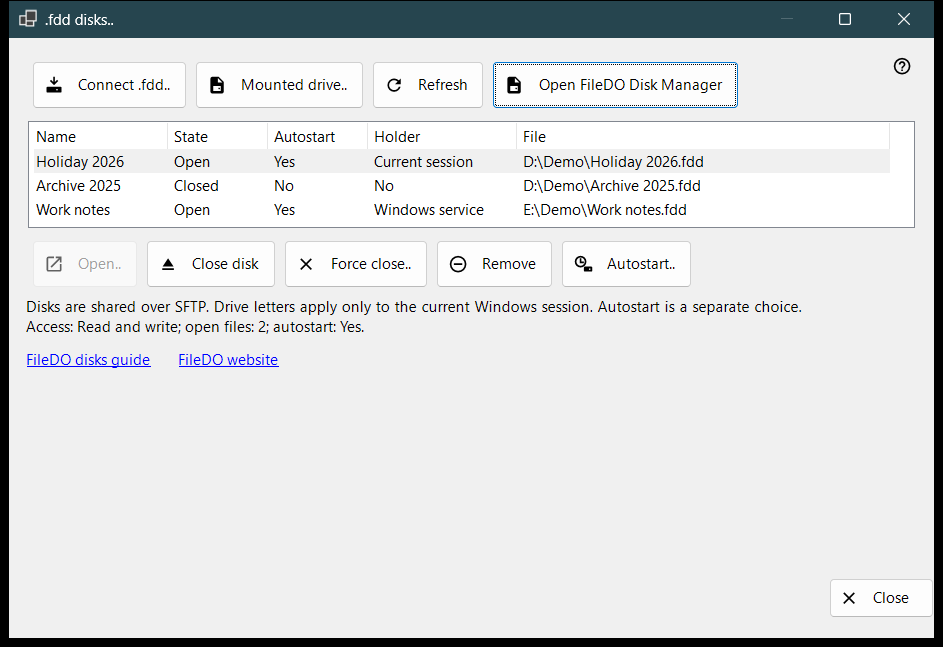
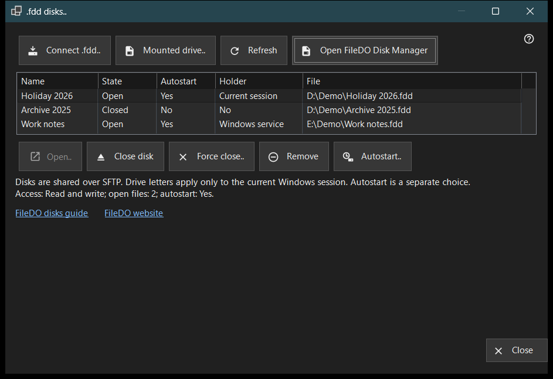

.fdd disks
What this is for
Lists the FileDO .fdd disks that this PC shares over SFTP and carries the everyday disk commands: connect a disk, open or close it, stop sharing it, and decide whether it opens together with the server. It opens from the '.fdd disks..' item of the Add menu in the Share Manager main window.


In this order
- Press 'Connect .fdd..', pick the .fdd file and confirm the options dialog.
- Select the disk in the list; the line under the list shows its access mode, open files and autostart.
- Use 'Open..' for a closed disk, 'Close disk' for an open one, or 'Autostart..' to change automatic opening.
- Press 'Refresh' to re-read the state; the window also re-reads it every 10 seconds.
- Press 'Close' to leave.
The elements
Disk list
Each row is one shared disk: Name, State (Open, Opening, Closing, Closed, Locked, Error or Unknown), Autostart, Holder and the path of the .fdd File. Holder says who keeps the disk open: Windows service, Current session, or No when nobody does. Hover a row to see its full path. The first row is selected on its own, and the line under the list shows its access (Read-only or Read and write), the number of open files and its autostart. When the sharing service cannot share disks, the list and the command buttons are hidden and that line gives the reason; if FileDO itself has the disk mounted, the 'Open FileDO Disk Manager' link appears.
Connect .fdd..
Pick an .fdd file and register it for sharing. The options dialog asks for a Name, the Read-only choice and 'Open after registration' (ticked by default). For an encrypted disk it also asks for the Password, and you can give the disk a drive letter or keep 'No letter - sharing only'. A letter lasts only for the current Windows session. If the disk is still open in FileDO, save and close it there first. If registration succeeds but the disk does not open, a message says so and the disk stays in the list as closed.
Mounted drive..
Choose a ready drive of this PC, for example a disk that FileDO has already mounted. The window closes and the main window continues with its usual add-folder step for that drive.
Open, close and remove
'Open..' reopens a closed, locked or failed disk and asks for the password of an encrypted one. 'Close disk' is available for an open disk only; clients temporarily lose access and open files get up to 30 seconds to close. 'Force close..' disconnects open files at once, so unsaved data may be lost. 'Remove' stops sharing: the disk is closed, its autostart setting and stored key are deleted, and the .fdd file is kept. Each of these asks for confirmation first, with Cancel as the default answer.
Autostart
The Autostart column shows Yes or No for every disk without selecting it. A dash (-) means the sharing service does not support autostart; then 'Autostart..' is disabled. 'Autostart..' toggles the setting after a confirmation: switching on opens the disk together with the server, and the password of an encrypted disk is saved in the protected Windows store on this PC; switching off deletes that stored key. The setting is independent of State, so a closed or failed disk can still have autostart on. FileDO rows in the main window list show it too.
Guide, website and Close
'FileDO disks guide' and 'FileDO website' open the guide and the site of FileDO, the program the disks come from. If FileDO Disk Manager is not found on this PC, the window says to install FileDO from its website. 'Close' leaves the window; it cannot be closed while a disk operation is running.
Manager settings · SFTP sharing settings · Exchange server settings